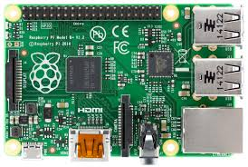

What Is Raspberry Pi
 Raspberry Pi is the name of a series of single-board computers made by the Raspberry Pi Foundation, a UK charity that aims to educate people in computing and create easier access to computing education. The Raspberry Pi launched in 2012, and there have been several iterations and variations released since then. The original Pi had a single-core 700MHz CPU and just 256MB RAM, and the latest model has a quad-core 1.4GHz CPU with 1GB RAM. The main price point for Raspberry Pi has always been $35 and all models have been $35 or less, including the Pi Zero, which costs just $5. All over the world, people use Raspberry Pis to learn programming skills, build hardware projects, do home automation, and even use them in industrial applications. The Raspberry Pi is a very cheap computer that runs Linux, but it also provides a set of GPIO (general purpose input/output) pins that allow you to control electronic components for physical computing and explore the Internet of Things (IoT).Why Is the Raspberry Pi?
The Raspberry Pi is a credit-card sized computer designed and manufactured by the Raspberry Pi Foundation, a non-profit organization dedicated to making computers and programming instruction as accessible as possible to the widest number of people.
Although the original mission of the Raspberry Pi project was to get inexpensive computers with programming capabilities into the hands of students, the Pi has been embraced by a diverse audience. Tinkers, programmers, and DIYers across the globe have adopted the tiny platform for projects ranging from recreating retro arcade cabinets to controlling robots to setting up cheap but powerful home media devices. Introduced in 2012, the original Raspberry Pi (what we now refer to as the Raspberry Pi 1 Model A) featured a system-on-a-chip setup built around the Broadcom BCM2835 processor–a tiny but fairly powerful mobile processor commonly used in cellphones. It included a CPU, GPU, audio/video processing, and other functionality all on a low-power chip paired with a 700Mhz single core ARM processor. Over the intervening years the foundation has released multiple revisions (switching out the Broadcom chips for improved versions and upping the CPU power with a 1.2GHz quad-core chip).Although the Pi is an amazing little device that has grown by leaps and bounds since its introduction, it’s important to emphasize what the Raspberry Pi is not. The Raspberry Pi is not an outright replacement for your desktop computer or laptop. You cannot run Windows on it (at least not the traditional version of Windows you know), although you can run many distributions of Linux—including distributions with desktop environments, web browsers, and other elements you would expect in a desktop computer.
The Raspberry Pi is, however, an astoundingly versatile device that packs a lot of hardware into a very inexpensive body and is perfect for hobby electronics, DIY projects, setting up an inexpensive computer forprogramming lessons and experiments, and other endeavors.Raspberry Pi 3 Specifications
SoC: Broadcom BCM2837CPU: 4× ARM Cortex-A53, 1.2GHz
GPU: Broadcom VideoCore IV
RAM: 1GB LPDDR2 (900 MHz)
Networking: 10/100 Ethernet, 2.4GHz 802.11n wireless
Bluetooth: Bluetooth 4.1 Classic, Bluetooth Low Energy
Storage: microSD
GPIO: 40-pin header, populated
Ports: HDMI, 3.5mm analogue audio-video jack, 4× USB 2.0, Ethernet, Camera Serial Interface (CSI), Display Serial Interface (DSI)